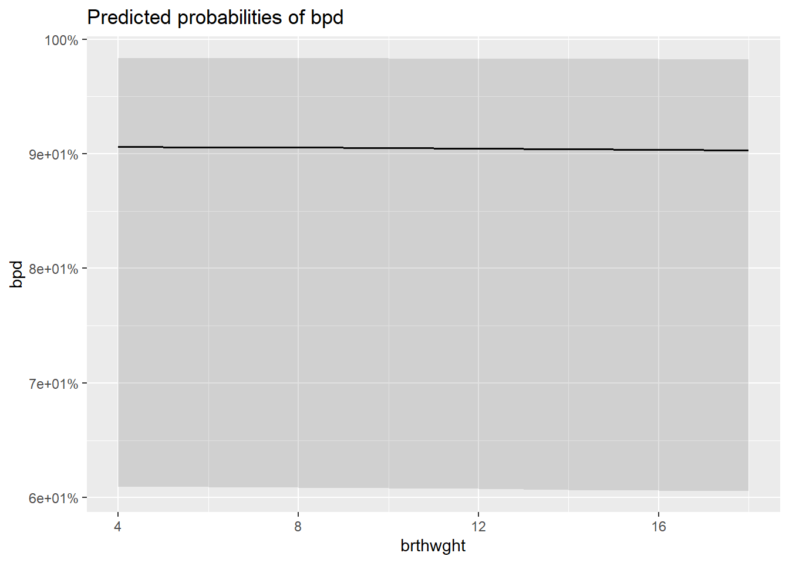
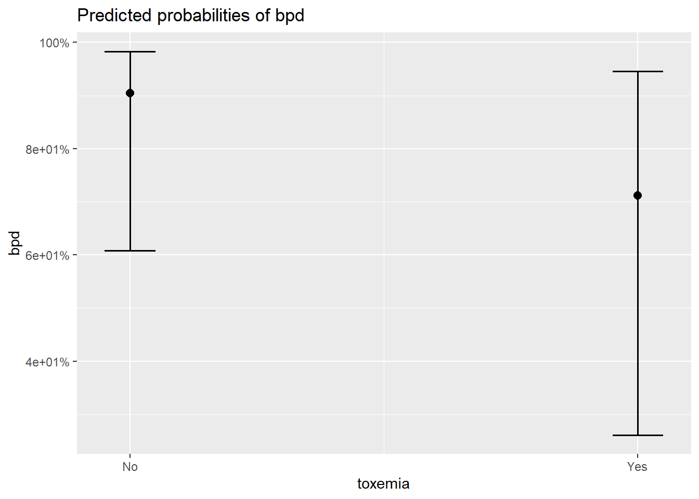
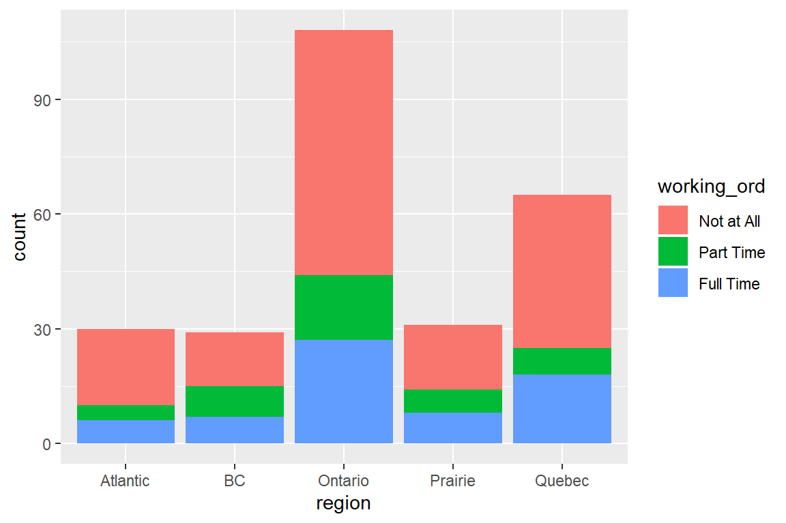
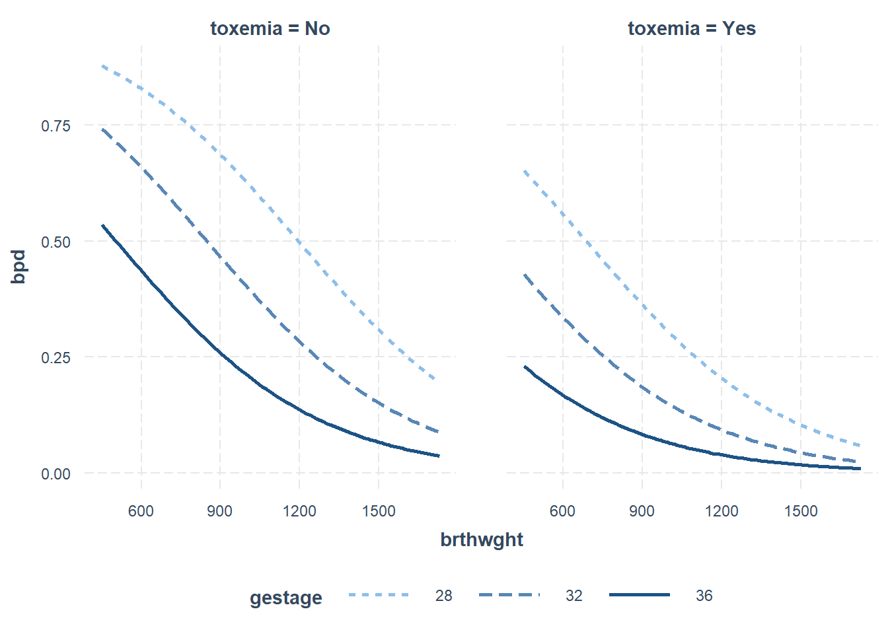
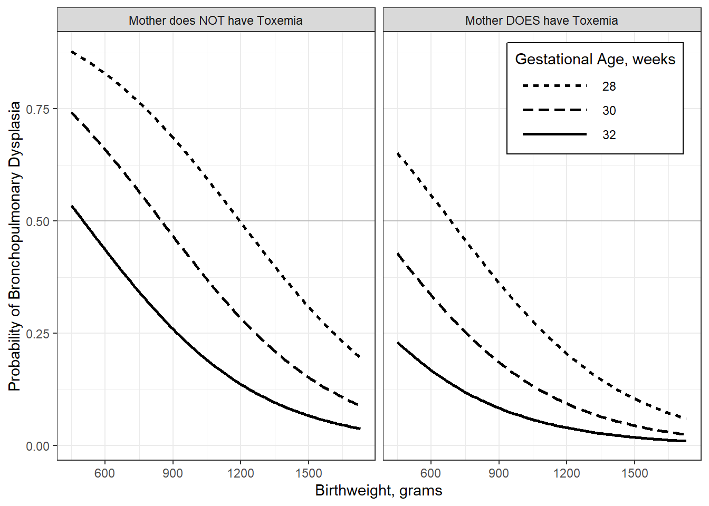
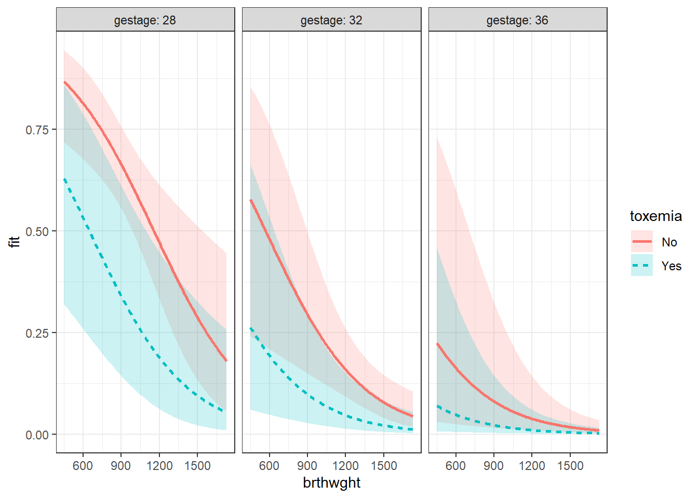
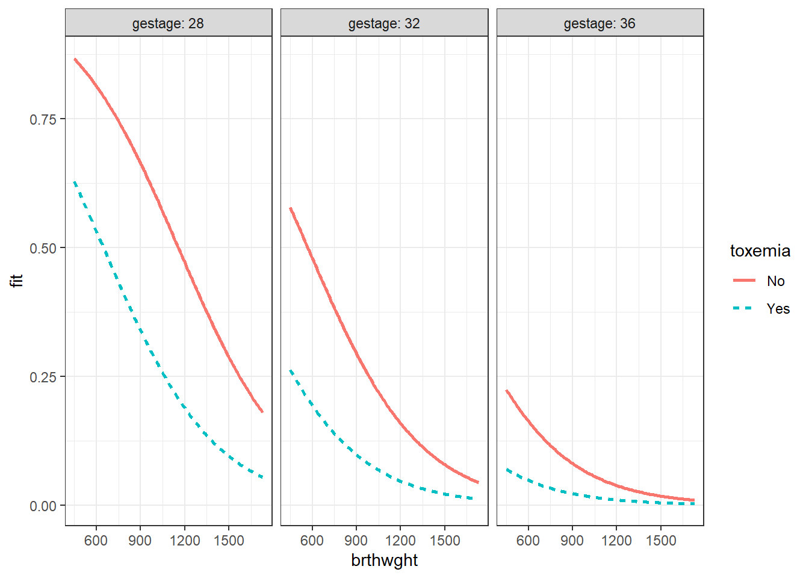

8 Logistic Regression - Ex: Bronchopulmonary Dysplasia in Premature Infants
example walk through:
https://stats.idre.ucla.edu/r/dae/logit-regression/
info:
https://onlinecourses.science.psu.edu/stat504/node/216/
sjPlot::tab_model (HTML only)
http://www.strengejacke.de/sjPlot/articles/sjtlm.html#changing-summary-style-and-content
finafit
https://www.r-bloggers.com/elegant-regression-results-tables-and-plots-in-r-the-finalfit-package/
Install a package Dr. Schwartz wrote:
library(tidyverse)
library(haven) # read in SPSS dataset
library(furniture) # nice table1() descriptives
library(stargazer) # display nice tables: summary & regression
library(texreg) # Convert Regression Output to LaTeX or HTML tables
library(texreghelpr) # Dr. Schwartz's helper funtcions for texreg tables
library(psych) # contains some useful functions, like headTail
library(car) # Companion to Applied Regression
library(pscl) # psudo R-squared function
library(interactions) # interaction plots
library(sjPlot) # various plots
library(performance) # r-squared values8.1 Background
Simple example demonstrating basic modeling approach: Data on Bronchopulmonary Dysplasia (BPD) from 223 low birth weight infants (weighing less than 1750 grams).
8.1.1 Source
Data courtesy of Dr. Linda Van Marter.
8.1.2 Reference
Van Marter, L.J., Leviton, A., Kuban, K.C.K., Pagano, M. & Allred, E.N. (1990). Maternal glucocorticoid therapy and reduced risk of bronchopulmonary dysplasia. Pediatrics, 86, 331-336.
The data are from a study of low birth weight infants in a neonatal intensive care unit. The study was designed to examine the development of bronchopulmonary dysplasia (BPD), a chronic lung disease, in a sample of 223 infants weighing less than 1750 grams. The response variable is binary, denoting whether an infant develops BPD by day 28 of life (where BPD is defined by both oxygen requirement and compatible chest radiograph).
8.1.3 Variables
bpd0 = no, 1 = yes
brthwghtnumber of grams
gestagenumber of weeks
toxemiain mother, 0 = no, 1 = yes
bpd_raw <- read.table("https://raw.githubusercontent.com/CEHS-research/data/master/Regression/VanMarter_%20BPD.txt",
header = TRUE,
strip.white = TRUE)[1] 223Rows: 223
Columns: 4
$ bpd <int> 1, 0, 1, 0, 0, 0, 1, 0, 1, 1, 0, 0, 1, 1, 0, 0, 1, 1, 1, 1...
$ brthwght <int> 850, 1500, 1360, 960, 1560, 1120, 810, 1620, 1000, 700, 13...
$ gestage <int> 27, 33, 32, 35, 33, 29, 28, 32, 30, 26, 31, 31, 31, 29, 33...
$ toxemia <int> 0, 0, 0, 1, 0, 0, 0, 0, 0, 0, 0, 0, 0, 0, 0, 0, 0, 0, 0, 0...# A tibble: 6 x 4
bpd brthwght gestage toxemia
<int> <int> <int> <int>
1 1 850 27 0
2 0 1500 33 0
3 1 1360 32 0
4 0 960 35 1
5 0 1560 33 0
6 0 1120 29 0Note: For logistic regression, you need to leave the outcome (dependent variable) coded as zeros
0and ones1and NOT apply lables. You do want to apply labels to factors that function as predictors (independent varaibles).
bpd_clean <- bpd_raw %>%
dplyr::mutate(toxemia = factor(toxemia,
levels = c(0, 1),
labels = c("No", "Yes"))) bpd brthwght gestage toxemia
Min. :0.0000 Min. : 450 Min. :25.00 No :194
1st Qu.:0.0000 1st Qu.: 895 1st Qu.:28.00 Yes: 29
Median :0.0000 Median :1140 Median :30.00
Mean :0.3408 Mean :1173 Mean :30.09
3rd Qu.:1.0000 3rd Qu.:1465 3rd Qu.:32.00
Max. :1.0000 Max. :1730 Max. :37.00 8.2 Logistic Regresion: Fit the Model to the data
Instead of using the lm() function from base R, you use glm(). You also need to add an option to specify which generalization you want to use. To do logistic regression for a binary outcome, use family = binomial(link = "logit").
8.2.1 Null Model: no independent variables
Call:
glm(formula = bpd ~ 1, family = binomial(link = "logit"), data = bpd_clean)
Deviance Residuals:
Min 1Q Median 3Q Max
-0.913 -0.913 -0.913 1.467 1.467
Coefficients:
Estimate Std. Error z value Pr(>|z|)
(Intercept) -0.6597 0.1413 -4.669 3.02e-06 ***
---
Signif. codes: 0 '***' 0.001 '**' 0.01 '*' 0.05 '.' 0.1 ' ' 1
(Dispersion parameter for binomial family taken to be 1)
Null deviance: 286.14 on 222 degrees of freedom
Residual deviance: 286.14 on 222 degrees of freedom
AIC: 288.14
Number of Fisher Scoring iterations: 48.2.2 Main Effects Model: add 3 predictors
Note: Since the unites of weight are so small, the estimated parameter will be super small. To offset the small units, we can re-scale the weights by dividing the grams by 100 to create “hectograms”.
fit_glm_1 <- glm(bpd ~ I(brthwght/100) + gestage + toxemia,
data = bpd_clean,
family = binomial(link = "logit"))
summary(fit_glm_1)
Call:
glm(formula = bpd ~ I(brthwght/100) + gestage + toxemia, family = binomial(link = "logit"),
data = bpd_clean)
Deviance Residuals:
Min 1Q Median 3Q Max
-1.8400 -0.7029 -0.3352 0.7261 2.9902
Coefficients:
Estimate Std. Error z value Pr(>|z|)
(Intercept) 13.93608 2.98255 4.673 2.98e-06 ***
I(brthwght/100) -0.26436 0.08123 -3.254 0.00114 **
gestage -0.38854 0.11489 -3.382 0.00072 ***
toxemiaYes -1.34379 0.60750 -2.212 0.02697 *
---
Signif. codes: 0 '***' 0.001 '**' 0.01 '*' 0.05 '.' 0.1 ' ' 1
(Dispersion parameter for binomial family taken to be 1)
Null deviance: 286.14 on 222 degrees of freedom
Residual deviance: 203.71 on 219 degrees of freedom
AIC: 211.71
Number of Fisher Scoring iterations: 58.3 Model Fit
8.3.1 Log Likelihood and Deviance
'log Lik.' -143.07 (df=1)'log Lik.' -101.8538 (df=4)Note: Deviance = -2 times the Log Likelihood
[1] 286.14[1] 203.70758.4 Variance Explained
8.4.1 Many Options
Technically, \(R^2\) cannot be computed the same way in logistic regression as it is in OLS regression. There are several (over 10) alternatives that endever to calculate a similar metric in different ways.
Website: Statistical Horizons
Author: Paul Allison
Blog Post: What’s the Best R-Squared for Logistic Regression?
Compares and contrasts different options and his/our progression through them, in which he now prefers Tjur’s statistic (pronounced “choor”).
Great Quote: “For those who want an R^2 that behaves like a linear-model R^2, this is deeply unsettling.”
Note: Dr. Allison is very active at answering questions in the comments of this post.
Website: UCLA Institute for Digital Research and Education (IDRE)
Article: FAQ: WHAT ARE PSEUDO R-SQUAREDS?
Describes several of the most comment R-squared type measures for logistic regression (with Stata).
Website: The Stats Geek
Author: Jonathan Bartlett, Department of Mathematical Sciences, University of Bath and Associate Editor for the journal Biometrics
Blog Post: 2014: R squared in logistic regression
Focus on McFadden’s pseudo-R squared, in R.
8.4.2 McFadden’s pseud-R^2
McFadden’s \(pseudo-R^2\), in logistic regression, is defined as \(1−\frac{L_1}{L_0}\), where \(L_0\) represents the log likelihood for the “constant-only” or
\[ R^2_{McF} = 1 - \frac{L_1}{L_0} \]
'log Lik.' 0.2880843 (df=4)# R2 for Generalized Linear Regression
R2: 0.288
adj. R2: 0.2818.4.3 Cox & Snell
\(l = e^{L}\), since \(L\) is the log of the likelihood and \(l\) is the likelihood…\(log(l) = L\)
\[ R^2_{CS} = 1 - \Bigg( \frac{l_0}{l_1} \Bigg) ^{2 \backslash n} \\ n = \text{sample size} \]
'log Lik.' 0.3090253 (df=1)Cox & Snell's R2
0.3090253 8.4.4 Nagelkerke or Cragg and Uhler’s
\[ R^2_{Nag} = \frac{1 - \Bigg( \frac{l_0}{l_1} \Bigg) ^{2 \backslash n}} {1 - \Big( l_0 \Big) ^{2 \backslash n}} \]
'log Lik.' 0.4275191 (df=1)Nagelkerke's R2
0.4275191 8.4.6 Several at Once
the
pscl::pR2()function
Outputs:
llhThe log-likelihood from the fitted modelllhNullThe log-likelihood from the intercept-only restricted modelG2Minus two times the difference in the log-likelihoodsMcFaddenMcFadden’s pseudo r-squaredr2MLMaximum likelihood pseudo r-squaredr2CUCragg and Uhler’s pseudo r-squared
fitting null model for pseudo-r2 llh llhNull G2 McFadden r2ML r2CU
-101.8537711 -143.0699809 82.4324196 0.2880843 0.3090253 0.4275191 8.5 Model Compairisons, Inferential
8.5.1 Likelihood Ratio Test (LRT, aka. Deviance Difference Test)
# A tibble: 2 x 5
`Resid. Df` `Resid. Dev` Df Deviance `Pr(>Chi)`
<dbl> <dbl> <dbl> <dbl> <dbl>
1 222 286. NA NA NA
2 219 204. 3 82.4 9.23e-188.5.2 Bayes Factor and Performance Score
# A tibble: 2 x 12
Model Type AIC BIC R2_Tjur RMSE LOGLOSS SCORE_LOG SCORE_SPHERICAL PCP
<chr> <chr> <dbl> <dbl> <dbl> <dbl> <dbl> <dbl> <dbl> <dbl>
1 fit_~ glm 212. 225. 0.346 0.956 0.457 -40.0 0.0196 0.706
2 fit_~ glm 288. 292. 0 1.13 0.642 -30.4 0.0410 0.551
# ... with 2 more variables: BF <dbl>, Performance_Score <dbl>8.6 Parameter Estimates
8.6.1 Link: Logit Scale
(Intercept) I(brthwght/100) gestage toxemiaYes
13.9360826 -0.2643578 -0.3885357 -1.3437865 2.5 % 97.5 %
(Intercept) 8.3899004 20.1418979
I(brthwght/100) -0.4289642 -0.1089495
gestage -0.6252493 -0.1725921
toxemiaYes -2.6152602 -0.21332748.6.2 Exponentiate: Odds Ratio Scale
(Intercept) I(brthwght/100) gestage toxemiaYes
1.128142e+06 7.676988e-01 6.780490e-01 2.608561e-01 2.5 % 97.5 %
(Intercept) 4.402379e+03 5.591330e+08
I(brthwght/100) 6.511832e-01 8.967757e-01
gestage 5.351280e-01 8.414808e-01
toxemiaYes 7.314875e-02 8.078916e-018.7 Significance of Terms
8.7.1 Wald’s \(t\)-Test
Estimate Std. Error z value Pr(>|z|)
(Intercept) 13.9360826 2.98255085 4.672538 2.975003e-06
I(brthwght/100) -0.2643578 0.08123149 -3.254376 1.136419e-03
gestage -0.3885357 0.11489128 -3.381768 7.202086e-04
toxemiaYes -1.3437865 0.60750335 -2.211982 2.696791e-028.7.2 Single term deletion, \(\chi^2\) LRT
Note: Significance of each variable is assessed by comparing it to the model that drops just that one term (
type = 3); order doesn’t matter.
# A tibble: 4 x 5
Df Deviance AIC LRT `Pr(>Chi)`
<dbl> <dbl> <dbl> <dbl> <dbl>
1 NA 204. 212. NA NA
2 1 215. 221. 11.4 0.000744
3 1 217. 223. 13.1 0.000293
4 1 209. 215. 5.52 0.0188 8.7.3 Sequential addition, \(\chi^2\) LRT
Note: Signifcance of each additional variable at a time; ordered first to last
# A tibble: 4 x 5
Df Deviance `Resid. Df` `Resid. Dev` `Pr(>Chi)`
<int> <dbl> <int> <dbl> <dbl>
1 NA NA 222 286. NA
2 1 62.4 221 224. 2.78e-15
3 1 14.5 220 209. 1.41e- 4
4 1 5.52 219 204. 1.88e- 28.8 Parameter Estimate Tables
8.8.1 Logit scale (Link, default)
| Model 1 | |
|---|---|
| (Intercept) | 13.94 (2.98)*** |
| brthwght/100 | -0.26 (0.08)** |
| gestage | -0.39 (0.11)*** |
| toxemiaYes | -1.34 (0.61)* |
| AIC | 211.71 |
| BIC | 225.34 |
| Log Likelihood | -101.85 |
| Deviance | 203.71 |
| Num. obs. | 223 |
| p < 0.001; p < 0.01; p < 0.05 | |
Note: You may request: Confidence Intervals on Logit scale with the options:
ci.force = TRUE, ci.test = 1
| Model 1 | |
|---|---|
| (Intercept) | 13.936083 [ 8.090390; 19.781775]* |
| brthwght/100 | -0.264358 [-0.423569; -0.105147]* |
| gestage | -0.388536 [-0.613718; -0.163353]* |
| toxemiaYes | -1.343786 [-2.534471; -0.153102]* |
| AIC | 211.707542 |
| BIC | 225.336229 |
| Log Likelihood | -101.853771 |
| Deviance | 203.707542 |
| Num. obs. | 223 |
| * 1 outside the confidence interval. | |
8.8.2 Odds-Ratio Scale (exponentiate)
| Model 1 | |
|---|---|
| (Intercept) | 1128141.99 [4402.38; 559132968.51]* |
| brthwght/100 | 0.77 [ 0.65; 0.90]* |
| gestage | 0.68 [ 0.54; 0.84]* |
| toxemiaYes | 0.26 [ 0.07; 0.81]* |
| AIC | 211.71 |
| BIC | 225.34 |
| Log Likelihood | -101.85 |
| Deviance | 203.71 |
| Num. obs. | 223 |
| * 0 outside the confidence interval. | |
8.8.3 BOTH: Logit and Odds-Ratio
texreg::knitreg(list(fit_glm_1,
texreghelpr::extract_glm_exp(fit_glm_1,
include.aic = FALSE,
include.bic = FALSE,
include.loglik = FALSE,
include.deviance = FALSE,
include.nobs = FALSE)),
custom.model.names = c("b (SE)",
"OR [95% CI]"),
single.row = TRUE,
ci.test = 1)| b (SE) | OR [95% CI] | |
|---|---|---|
| (Intercept) | 13.94 (2.98)*** | 1128141.99 [4402.38; 559132968.51]* |
| brthwght/100 | -0.26 (0.08)** | 0.77 [ 0.65; 0.90]* |
| gestage | -0.39 (0.11)*** | 0.68 [ 0.54; 0.84]* |
| toxemiaYes | -1.34 (0.61)* | 0.26 [ 0.07; 0.81]* |
| AIC | 211.71 | |
| BIC | 225.34 | |
| Log Likelihood | -101.85 | |
| Deviance | 203.71 | |
| Num. obs. | 223 | |
| p < 0.001; p < 0.01; p < 0.05 (or Null hypothesis value outside the confidence interval). | ||
8.9 Marginal or Predicted Values
8.9.1 Across All Predictors
Note: By default it will select 5-6 “nice” values for each continuous variable. All levels of categorical factors will be included.
brthwght*gestage*toxemia effect
, , toxemia = No
gestage
brthwght 25 28 31 34 37
450 0.9540464 0.8661657 0.66860145 0.38609882 0.163919741
770 0.8990883 0.7352702 0.46404255 0.21253946 0.077608513
1100 0.7883077 0.5372180 0.26571767 0.10137254 0.033971437
1400 0.6275409 0.3443597 0.14069462 0.04856170 0.015661772
1700 0.4325654 0.1920105 0.06897089 0.02257203 0.007147496
, , toxemia = Yes
gestage
brthwght 25 28 31 34 37
450 0.8441313 0.62800950 0.34481263 0.140937262 0.048654446
770 0.6991701 0.42012556 0.18424240 0.065775334 0.021476635
1100 0.4927426 0.23243034 0.08625483 0.028585525 0.009089901
1400 0.3053170 0.12049913 0.04096070 0.013139235 0.004133317
1700 0.1658709 0.05837137 0.01895794 0.005987954 0.0018743708.9.2 Specify Some Predictors
Note: if a predictor is left off the
focal.predictors, the predictions are AVERAGED over that variable.
brthwght*gestage effect
gestage
brthwght 25 28 31 34 37
450 0.9457476 0.8445817 0.62880972 0.34558725 0.141352684
770 0.8820911 0.6998904 0.42096066 0.18475801 0.065986229
1100 0.7576801 0.4935992 0.23304229 0.08652530 0.028680839
1400 0.5858727 0.3060443 0.12086278 0.04109553 0.013183745
1700 0.3902779 0.1663456 0.05856001 0.01902178 0.006008386
brthwght*toxemia effect
toxemia
brthwght No Yes
450 0.74150653 0.42801049
770 0.55178083 0.24307063
1100 0.33972675 0.11833437
1400 0.18883689 0.05725008
1700 0.09529265 0.026741188.9.3 Set a constant (fixed) value for a predictor(s)
effects::Effect(focal.predictors = c("brthwght"),
fixed.predictors = list(gestage = 34,
toxemia = "no"),
mod = fit_glm_1)
brthwght effect
brthwght
450 770 1100 1400 1700
0.70662760 0.50827827 0.30168968 0.16351033 0.08125536 8.9.4 Set values for a continuous predictor
effects::Effect(focal.predictors = c("brthwght", "gestage"),
fixed.predictors = list(toxemia = "no"),
xlevels = list(gestage = c(24, 32, 36)),
mod = fit_glm_1)
brthwght*gestage effect
gestage
brthwght 24 32 36
450 0.9625602 0.53458922 0.195357871
770 0.9168973 0.33018096 0.094361297
1100 0.8217923 0.17083126 0.041730765
1400 0.6760033 0.08526886 0.019322688
1700 0.4856018 0.04046955 0.0088360778.9.5 Add SE and 95% Confidence Interval
effects::Effect(focal.predictors = c("brthwght", "gestage", "toxemia"),
xlevels = list(brthwght = c(500, 1000, 1500),
gestage = c(30, 36)),
mod = fit_glm_1) %>%
data.frame()# A tibble: 12 x 7
brthwght gestage toxemia fit se lower upper
<dbl> <dbl> <fct> <dbl> <dbl> <dbl> <dbl>
1 500 30 No 0.723 0.109 0.474 0.883
2 1000 30 No 0.410 0.0523 0.313 0.515
3 1500 30 No 0.156 0.0475 0.0839 0.273
4 500 36 No 0.202 0.179 0.0281 0.690
5 1000 36 No 0.0633 0.0484 0.0135 0.251
6 1500 36 No 0.0177 0.0115 0.00492 0.0616
7 500 30 Yes 0.405 0.171 0.145 0.732
8 1000 30 Yes 0.154 0.0756 0.0548 0.362
9 1500 30 Yes 0.0461 0.0312 0.0119 0.162
10 500 36 Yes 0.0620 0.0701 0.00619 0.412
11 1000 36 Yes 0.0173 0.0168 0.00255 0.109
12 1500 36 Yes 0.00468 0.00422 0.000794 0.02708.10 Marginal Model Plots
8.10.1 Individual Marginal Plots for one IV, individually
The
sjPlot::plot_model()function automatically transforms the predictions to the probability score when you include thetype = "pred"option.
$brthwght
$gestage
$toxemia
8.10.2 Combination Marginal Plots for two-three IVs, all at once
For continuous IV that are not on the x-axis (pred), be default three values will be selected: the mean and plus-or-minus one stadard error for the mean (SEM).
The
outcome.scale = "link"option plots the LOGIT scale on the y-axis.
interactions::interact_plot(model = fit_glm_1,
pred = brthwght,
modx = gestage,
mod2 = toxemia,
outcome.scale = "link")
Alternatively, you may use the modx.labels option to set specific values at which to plot the moderator.
The
outcome.scale = "response"option plots the PROBABILITY scale on the y-axis.
interactions::interact_plot(model = fit_glm_1,
pred = brthwght,
modx = gestage,
modx.labels = c(28, 32, 36),
mod2 = toxemia,
outcome.scale = "response")
You can always do more work to get to a PUBLISH-ABLE version
interactions::interact_plot(model = fit_glm_1,
pred = brthwght,
modx = gestage,
modx.labels = c(28, 30, 32),
mod2 = toxemia,
outcome.scale = "response",
x.label = "Birthweight, grams",
y.label = "Probability of Bronchopulmonary Dysplasia",
legend.main = "Gestational Age, weeks",
mod2.label = c("Mother does NOT have Toxemia",
"Mother DOES have Toxemia"),
colors = rep("black", 3)) +
geom_hline(yintercept = .5, alpha = .2) +
theme_bw() +
theme(legend.background = element_rect(color = "black"),
legend.position = c(1, 1),
legend.justification = c(1.1, 1.1),
legend.key.width = unit(2, "cm"))
8.10.3 Total Control is also available
effects::Effect(focal.predictors = c("brthwght", "toxemia", "gestage"),
mod = fit_glm_1,
xlevels = list(brthwght = seq(from = 450, to = 1730, by = 10),
gestage = c(28, 32, 36))) %>%
data.frame() %>%
dplyr::mutate(gestage = factor(gestage)) %>%
ggplot(aes(x = brthwght,
y = fit)) +
geom_ribbon(aes(ymin = lower,
ymax = upper,
fill = toxemia),
alpha = .2) +
geom_line(aes(linetype = toxemia,
color = toxemia),
size = 1) +
facet_grid(. ~ gestage, labeller = label_both) +
theme_bw()
effects::Effect(focal.predictors = c("brthwght", "toxemia", "gestage"),
mod = fit_glm_1,
xlevels = list(brthwght = seq(from = 450, to = 1730, by = 10),
gestage = c(28, 32, 36))) %>%
data.frame() %>%
dplyr::mutate(gestage = factor(gestage)) %>%
ggplot(aes(x = brthwght,
y = fit)) +
geom_line(aes(linetype = toxemia,
color = toxemia),
size = 1) +
facet_grid(. ~ gestage, labeller = label_both) +
theme_bw()